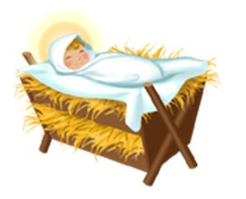

Lí atetekọṣe, li Ọ̀rọ̀ wà

Ibẹẹrẹ Ọtun?
Ni gbogbo Oṣu Kejila, a bẹrẹ lati nireti ayẹyẹ ti o tobi julọ ti ọdun: Keresimesi! Gbogbo àwọn ilé ìtajà náà máa ń móoru pẹ̀lú ìmọ́lẹ̀ àti dòjé (ó dà bí ẹni pé ní ìbẹ̀rẹ̀ àti ní ìbẹ̀rẹ̀ lọ́dọọdún), a máa ń ta iná yí ilé wa ká, a sì ń ṣe igi lọ́ṣọ̀ọ́, àní àwọn òpópónà ìlú àti àwọn ìlú ńlá pàápàá ń tàn pẹ̀lú ìmọ́lẹ̀ yíká ọ̀pọ̀ ilé náà. Ati awọn ayọ nla gbogbo? Awọn ebun! Kini a o gba? Ṣe yoo jẹ ohun ti a ti nireti? A ko le duro fun ọjọ karundilọgbọn osun kejila lasan!

Iwọle Idakẹjẹ pupọ
Nitorina, n jẹ bi o ṣe ṣẹlẹ ni ẹgbẹrun meji ọdun sẹhin niyẹn ni? Njẹ awọn eniyan nduro ni ireti?: wọn ha ṣe gbogbo ile wọn lọṣọọ ni ifojusọna si ibi Jesu bi? Ṣé wọ́n ti ra ẹ̀bùn fún ara wọn láti ṣe ayẹyẹ ìbí tí wọ́n ti ń retí tipẹ́ yìí? Nígbàtí a bí i, ṣé ìkéde kan jáde káàkiri ayé pé Olùgbàlà ti dé nígbẹ̀yìn?
Ko ribe.

Nígbà tí wọ́n bí Jésù ní Bẹ́thlẹ́hẹ́mù, tí wọ́n tún ń pè ní Ìlú Dáfídì (rántí?), èèyàn diẹ ló mọ̀ nípa rẹ̀ gan-an. Màríà, ìyá Jésù àti Jósẹ́fù, àfẹ́sọ́nà rẹ̀ wà níbẹ̀. Ó ṣeé ṣe káwọn èèyàn tí wọ́n ní ibùjẹ ẹran tí Màríà àti Jósẹ́fù ń gbé ti mọ̀ pé obìnrin náà ti bímọ, àmọ́ kò ṣe pàtàkì sí wọn.
Sugbọn ayọ nla bẹ ni ọrun, a mọ eyi, nitori iwe Luku 2:8-14 sọ fun wa pe ọpọ awọn angeli yọ si awọn olusọ agutan kan ni alẹ ọjọ ibi Jesu. Kì í ṣe pé wọ́n kéde pé a ti bí ọmọkùnrin kan tó ń jẹ́ Jésù nìkan ni, ṣùgbọ́n wọ́n polongo ní ti gidi pé òun ni Mèssiah tí àwọn Júù ti ń retí tipẹ́tipẹ́!
Ṣugbọn yoo jẹ ọgbọn ọdun miiran ki ẹnikẹni miiran to le mọ nipa rẹ.

Ọkunrin Mẹrin, Itan Mẹrin
Ni awọn ọdun ti o tẹle iku Jesu, ajinde ati igoke re ọrun, awọn ọkunrin mẹrin ti o yatọ ni a mí si lati kọ nipa igbesi-aye Jesu. Awọn iwe mẹrin akọkọ ti Majẹmu Titun jẹ orukọ fun awọn ọkunrin ti o kọ awọn itan-akọọlẹ igbesi aye wọnyi (ti gbogbo wọn pe wọn ni Ihinrere): Matteu, Marku, Luku ati Johannu.
Wọn ko jiroro rẹ pẹlu ara wọn; wọ́n lè má tiẹ̀ mọ̀ pé ẹlòmíràn ló ń kọ ìtàn Jésù. Matteu, Luku ati Johannu ti fẹrẹẹ ka Ihinrere ti Marku; Àwọn ọ̀mọ̀wé gbà pé ó jẹ́ ìtàn ìgbésí ayé àkọ́kọ́ ti Jésù láti kọ. Ṣugbọn awọn ihinrere mẹrin ni a kọ ni ominira ti ara wọn.

Nígbà tí ẹnì kan bá ń sọ ìtàn nípa ìṣẹ̀lẹ̀ kan, òun yóò máa gbìyànjú láti ṣàfikún ohun, nínú èrò wọn, àwọn apá tó ṣe pàtàkì jù lọ. Eyi jẹ ọran pẹlu Matteu, Marku, Luku ati Johannu. Awọn kan ko nipa isẹlẹ ti awọn miran ko kọ; awon miran so ̣ọ ni ona ti o yatọ die.
Bí àpẹẹrẹ, Mátteù àti Lúùkù nìkan ló sọ ìtàn ìbí Jésù. Bóyá, nínú ọkàn Lúùkù, ó ṣe pàtàkì pé kí àwọn èèyàn mọ̀ pé nipase wúńdíá kan lase bí Jésù. Josẹfu afẹsọna Maria, kii ṣe baba Jesu; Ọmọ Ọlọrun ni Jesu. (Luku 1:26-38 )
Ihinrere Matteu bẹrẹ pẹlu igi idile Jesu. Ǹjẹ́ o rántí bí Ọlọ́run ṣe ṣèlérí fún Ábráhámù ní àkókò pípẹ́ sẹ́yìn pé a óò bùkún ayé nípasẹ̀ ọba kan tí yóò ti inú àtọmọdọ́mọ rẹ̀ wá ( Gẹ́nẹ́sísì 12:3 )? Mátteù ṣàkíyèsí láti fi hàn pé Jésù jẹ́ àtọmọdọ́mọ Dáfídì Ọba tààràtà, tó jẹ́ àtọmọdọ́mọ Ábráhámù. Jésù ni ìmúṣẹ àsọtẹ́lẹ̀ ìgbàanì yẹn.
Nínú ọ̀ràn ti Máàkù àti Jòhánnù, ó dà bí ẹni pé wọ́n gbà pé, nígbà tí wọ́n ń kọ̀wé nípa Jésù, gbogbo ènìyàn yóò mọ ẹni tí wọ́n ń sọ̀rọ̀ nípa rẹ̀: Ní àwọn ọjọ́ Rẹ̀ lórí ilẹ̀ ayé níhìn-ín, Jésù jẹ́ olókìkí gan-an. Torí náà, Máàkù àti Jòhánù bẹ̀rẹ̀ ìtàn Jésù nígbà tó bẹ̀rẹ̀ iṣẹ́ iranṣẹ Rẹ̀ lórí ilẹ̀ ayé, ìyẹn nígbà tí Jésù wà ní nǹkan bí ọgbọ̀n ọdún.

Mèssiàh tí a ko reti
Nígbà tá a kẹ́kọ̀ọ́ nípa àwọn wòlíì tó sọ tẹ́lẹ̀ pé Ísraẹ́lì yóò ṣubú sí Ásíríà àti Bábílónì, a tún kẹ́kọ̀ọ́ pé àwọn wòlíì kan náà ń sọ tẹ́lẹ̀ pé Ọba kan, Mèssiàh, Olùgbàlà yóò jáde wá láti iran ìdílé Dáfídì Ọba. Àwọn àsọtẹ́lẹ̀ wọ̀nyí fún àwọn Júù nírètí pé Ísraẹ́lì yóò tún di orílẹ̀-èdè ńlá kan, pé ọba kan yóò wá láti ṣẹ́gun gbogbo àwọn ọ̀tá Ísraẹ́lì tí yóò sì sọ wọ́n di alágbára ńlá tí yóò ṣàkóso ayé.
Sugbon awọn Júù ko ka GBOGBO asọtẹlẹ wonyi; tabi, to ba jẹ wipe wọn ka, otumo si wipe ọpọlọpọ rẹ ni ko ye wọn. Àwọn wòlíì náà sọ àpèjúwe méjì nípa Mèssiáh tí Ọlọ́run yóò rán. Ọkan jẹ, nitootọ, lati jẹ Alakoso alagbara kan. Ohun ti awọn Ju ko ye ni pe Ọba yii yoo wa lati ibi ti ko ṣe akiyesi ati pe Oun kii yoo wa pẹlu ariwo nla (njẹ o ranti alẹ idakẹjẹ ni Betlehemu kekere ti o ṣofo?).
Ọba tuntun yii yoo jẹ eniyan ti yoo mọ ibanujẹ, ikekora ati irora lori ilẹ, kii ṣe ogo ati agbara ọba. Gẹ́gẹ́ bí ẹni tí a ṣẹ́gun, tí ìrẹ̀wẹ̀sì bá, àwọn Júù kò wá Mèssiàh onírẹ̀lẹ̀ kan bí ẹni tí Jésù jẹ́; wọn n wa ẹnikan ti o ni lagbara pupọ ju iyẹn lọ. Ó sì ṣẹlẹ̀ pé, nígbà tí Jésù dé, tí ó sì ń gbé àárín wọn, wọn kò mọ Mèssiah náà nígbà tí wọ́n rí i.

Ẹ̀kọ́ Jésù
Rántí pé Jésù dàgbà sí ibì kan tó wà lábẹ́ ìṣàkóso orílẹ̀-èdè mìíràn: lákòókò yìí, Ilẹ̀ Ọba Róòmù tó lágbára ni. Jesu dagba ni awujọ ti o rọrun pupọ; àwọn Júù jẹ́ olùfọkànsìn gidigidi, àwọn aládùúgbò Rẹ̀ sì jẹ́ àgbẹ̀ tàbí apẹja tàbí oníṣòwò (Jósẹ́fù, ọkọ ìyá rẹ̀, jẹ́ káfíńtà nípa òwò).
Bóyá nítorí èyí, Jésù gbìyànjú láti kọ́ni lẹ́kọ̀ọ́ òtítọ́ nípa tẹ̀mí nípa sísọ àwọn ìtàn, tí a ń pè ní owé, tí ó sábà máa ń wé mọ́ àwọn nǹkan tí àwọn ènìyàn láwùjọ rẹ̀ ì bá ti mọ̀ tí wọ́n sì lóye:

- Àgbẹ̀ kan tí ń fúnrúgbìn sí oko rẹ̀ ( Mátteù 13:2-23 )
- ọmọ tí ó ṣọ̀tẹ̀ sí àwọn òbí rẹ̀, ṣùgbọ́n ó padà sọ́dọ̀ wọn pẹ̀lú ìronúpiwada ǹlà fún ẹ̀ṣẹ̀ rẹ̀ ( Lúùkù 15:11-32 )
- olùṣọ́ àgùntàn tó pàdánù ọ̀kan lára àgùntàn rẹ̀ ( Lúùkù 15:11-32 ) Mátíù 18:10-14)
Àwọn Farisí
Nígbà ayé Jésù, àwọn àlùfáà (Bíbélì tún pè wọ́n ní Farisí—ọ̀rọ̀ tó túmọ̀ sí “àwọn tó ya ara wọn sọ́tọ̀)” ṣàkóso igbesi aye awọn Júù lojoojumọ. Àwọn àlùfáà wá láti ọ̀kan nínú àwọn ẹ̀yà Ísraẹ́lì méjìlá tí Ọlọ́run yàn fún iṣẹ́ náà gangan: àwọn ọmọ Léfì (láti inú ẹ̀yà Léfì). Wọ́n kà á sí iṣẹ́ wọn láti mú kí àwọn Júù má bàa ṣáko lọ, gẹ́gẹ́ bí wọ́n ti ṣe nígbà àtijọ́. Wọ́n rò pé iṣẹ́ wọn ni láti ka Bíbélì kí wọ́n sì túmọ̀ rẹ̀ fáwọn èèyàn. (Rántí ohun tí a sọ ṣáájú nípa bí Ọlọ́run ṣe fẹ́ kí Bíbélì wa fún gbogbo èèyàn?) Jésù kì í ṣe ẹ̀yà Léfì, torí náà Jésù kì í ṣe àlùfáà.

Láti lè jẹ́ olukọni, tàbí olùkọ́ àwọn òtítọ́ àti ìmọ̀ Bíbélì, ọkùnrin kan ní láti la ọ̀pọ̀ àkókò ìdánilẹ́kọ̀ọ́ ní ilé ẹ̀kọ́ àkànṣe àwọn olukonì. Jésù kò lọ sí ilé ẹ̀kọ́ àwọn rábì, nítorí náà àwọn Farisí kò kà á sí “ẹni tó yẹ” láti jẹ́ olùkọ́. Nítorí náà, ó fẹ́rẹ̀ẹ́ jẹ́ láti ìbẹ̀rẹ̀ iṣẹ́ òjíṣẹ́ rẹ̀, Jésù kò bá àwọn alákòóso ìsìn ṣọ̀kan. Síbẹ̀, ogunlọ́gọ̀ èèyàn pé jọ láti gbọ́ ohun tí Jésù ń kọ́ni. Nínú ọ̀kan lára àwọn ẹ̀kọ́ rẹ̀ tí ó lókìkí jù lọ, tí a ń pè ní Ìwàásù órí Òkè (a lè rí i nínú Mátteù 5 àti Lúùkù 6), ó fẹ́rẹ̀ẹ́ jẹ́ gbogbo kókó tí Ó sọ lòdì sí ohun tí àwọn Farisí yóò mú kí àwọn ènìyàn gbà gbọ́.

Ìpolongo yìí láti ọ̀dọ̀ Jésù jẹ́ ìforígbárí fún ìdí méjì:
- God loves people and wants them to love Him back. One of the ways of showing love for God is by obeying not just the letter of the law, but by obeying the spirit of the law, as well. So, as well as being honest, Jesus told His followers to be merciful, kind and just.
- Jesus wants His followers to be known by their love: love for their fellow believers, love even for their enemies. God has promised to forgive believers of their sins; He wants us to forgive each other.
The most important thing Jesus wanted His followers to know was that He, Jesus, was the Son of God, and that salvation from sin comes only through Him. One of the most famous verses in the Bible declares the New Covenant God was making with mankind, John 3:16:
For God so loved the world that He gave His only Son, so that whoever believes in Him should not perish, but have everlasting life.
This declaration from Jesus was revolutionary for two reasons: first, the idea that Jesus was the Son of God was unacceptable to many Jews. How could a mere man be God? The second idea that religious leaders of Jesus' day could not accept was that salvation was no longer reserved just for Jews. Jesus said that ANYONE who believes in Him can belong to God's Kingdom (John 1:12).
The Sadducees
The Sadducees, a prominent, often wealthy, group of Jews who lived in Jesus' day, had a sort of political arrangement with the Romans, so that they enjoyed a certain amount of political power. The Sadducees sometimes took on the task of collecting Roman taxes from their fellow Jews, and often were dishonest about it, requiring people to pay more than was actually owed so they could keep a share for themselves. The Sadducees were considered traitors by many of the Jewish people because of their close ties with the hated Romans.
There was often talk of rebellion among the Jews; they chafed under the harshness of Roman rule. The Sadducees considered it their job to keep the peace between the Jews and the Romans. The less trouble the Jews caused the Romans, so the Sadducees thought, the easier it would be for everyone.

The Problem With Jesus
As we saw earlier, Jesus went about teaching crowds of people and spreading the good news to everyone about God and His love. The Pharisees did not like this at all; they wanted to be the only religious authority among the Jews. Jesus taught people to think more deeply about spiritual matters than the priests had ever done, and they loved Him for it.

The Sadducees did not like the large crowds that Jesus was attracting, either. A crowd of people could not be easily controlled. If Jesus wanted the crowds around Him to follow Him in a rebellion against Rome, what could they do to prevent it?
The Sadducees knew that even a large crowd of Jews was no match for the might of the Roman army. If the Romans had to put down a Jewish rebellion, they would absolutely crush them (and about 35 years after Jesus' earthly life, that's exactly what they did). Their political power would mean nothing with the Romans anymore, and the Sadducees were not about to lose their power because of a rabble-rousing nobody like Jesus!

The absolute worst thing that Jesus did, though, was to proclaim to people that He was actually the Son of God. Jesus told them that He was the Messiah that they had been waiting for for so long. To the Pharisees, this was blasphemy (the utmost disrespect for God)! Under Jewish law, it was a crime punishable by death.
Time and again, Jesus had performed signs and miracles to back up His claim to be the Messiah: He healed the sick, made blind people see, and caused lame people to walk again. He had even raised a man from the dead!
Jesus was perceived as a threat both to the Pharisees (because He was causing people to doubt their authority) and to the Sadducees (because He might be a threat to their power).
The Pharisees and the Sadducees were not normally friendly or cooperative with each other, but now they had a common enemy: Jesus.

One night, when Jesus was praying, Judas Iscariot, a man who had been in Jesus' closest set of friends (His twelve disciples), led a group of Pharisees and Sadducees to where he knew Jesus liked to pray, the Garden of Gethsemane. Jesus did not resist being arrested, although He knew He had committed no crime.
Jesus' accusers took Him to Caiaphas, the High Priest of the temple, to conduct a secret trial. They told Caiaphas that Jesus was guilty of blasphemy because of His claim to be the Messiah.

As He stood before the High Priest, Jesus said, "I am the Messiah, and you will see me sitting at the right hand of of God." (Mark 14:62)
Although false witnesses had been gathered to give "evidence" against Jesus, Caiaphas decided that Jesus' statement alone was a confession of guilt. His verdict was that Jesus should be put to death.
The Jews could not carry out capital punishment without the permission of the Roman governor, Pontius Pilate. The priests brought Jesus before Pilate and told him that Jesus had committed treason: if He claimed to be the Messiah, they said, that was the same as saying He was King of the Jews. Under Roman law, no one could call himself a king except Caesar.
Pilate did not really think that Jesus was making a serious claim to be king, since He did not even offer up a defense for Himself as He was being tried. But the Jewish priests were insistent that Jesus be put to death. Even when Pilate offered them a choice of having a convicted murderer, Barabbas, freed, or having Jesus freed, the people all shouted for Jesus to be put to death. (Mark 15:6-13)

Jesus Dies And Is Resurrected
Crucifixion was a form of capital punishment used by the Romans. It was a most shameful way to die. Although Jesus is commonly portrayed in art as wearing a loin cloth, He was actually stripped of his clothing, so that He was naked for all to see. It was especially shaming because crucifixion was reserved by the Romans for the worst kinds of criminals.
After a night of being beaten, first by His Jewish accusers and then by the Roman guards, Jesus was made to carry His own cross to the place where He was to be crucified. He was so weak from all of His beatings that He could not bear up under the weight of the cross; a slave they passed along the way was made to carry Jesus' cross for Him.
When they arrived at the place of crucifixion, the Roman guards nailed Jesus' hands to the cross. They then gambled for the clothing they had taken from Him.
Although it usually took several days of intense suffering to die on a cross, Jesus' wounds and loss of blood from the night before probably hastened His death. He died the same day He was nailed to the cross.

While most of Jesus' friends had deserted Him when He was arrested in the Garden of Gethsemane, there was a man named Joseph of Arimathea who had the courage to go to Pilate and ask for Jesus' body so that it could be properly laid to rest.
He wrapped Jesus' body in linen and put it in a tomb that had been carved out of rock. He then rolled a large stone over the entrance and went his way.
Jesus had tried to tell His disciples many times that He would have to die as the final sacrifice for the sins of mankind, but they had never understood Him. If Jesus was the Son of God, they reasoned, if He was the Messiah promised of God, how could He ever die?
On the third day after Jesus died, some of the women who had been His friends went to His tomb. It was the Jewish custom to anoint the deceased person's body with certain special spices. As they were going, they wondered among themselves how they would ever move the stone that had been rolled in front of the tomb.

When the women arrived, they were amazed to find that the stone had already been rolled away and that the tomb was empty!
An angel, who was sitting where Jesus' body had been, said to them, "Don't be afraid! Jesus has risen from the dead, just as He said He would!" The angel told the women to return to their friends and tell them the great news that Jesus had risen from the dead. (Mark 16:6-7)
Just as the Jews celebrate Passover each year to commemorate their release from slavery in Egypt, Christians celebrate Easter Sunday as the most glorious event in history: Jesus had risen from the dead, conquering death's power over mankind and providing forgiveness of our sins for all time!
Naturally, Jesus' friends could not believe it when they heard that Jesus was not in His tomb.
But Jesus appeared to the eleven remaining disciples several times after His resurrection. He spent a good deal of time talking to them about how He had been the fulfillment of so many prophecies, and their eyes were finally opened to all the truths Jesus had tried to teach them before His crucifixion. (Luke 24:27)

Jesus Ascends Into Heaven
Jesus continued to appear to the disciples over a period of forty days after His resurrection. Once, during a meal He was sharing with them, He told them not to leave Jerusalem until they had received the gift of the Holy Spirit that had been promised to them. (John 14:16)
On the last occasion when Jesus appeared to them, the disciples asked Him if He was now going to restore Israel to its former glory. Jesus answered that only God the Father needs to know the answer to that kind of question. (Acts 1:7)
And as they all stood there with Him, Jesus began to rise, up and away from them. The disciples looked and looked until they could not see Jesus anymore. Jesus had ascended into heaven to be with His Father. But the story didn't end there. In fact, it was just beginning!